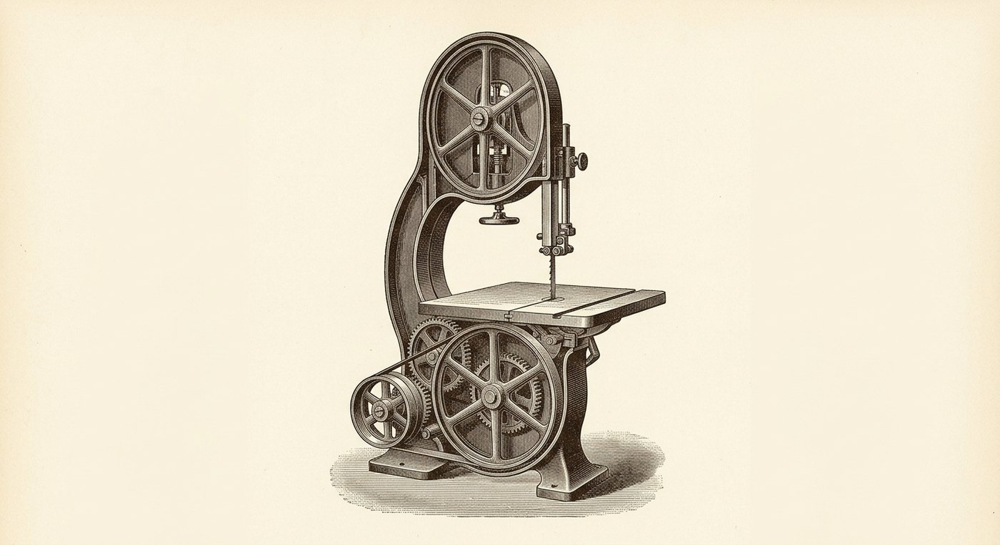

About the Collection
The company
Greenlee Bros. & Co. began in Chicago in 1862, founded by twin brothers Robert and Ralph Greenlee, and built its early reputation on machinery for the cooperage trade — barrels being the shipping containers of the nineteenth century — before broadening into a full line of woodworking machines. In 1904 the company moved to Rockford, Illinois, and it is the Rockford works that poured most of the iron on this site.
For the first two-thirds of the twentieth century, Greenlee machines equipped the furniture factories, sash-and-door plants, and millwork shops of the American Midwest — machines known for heavy castings, honest engineering, and a certain unfussy elegance. Over the same decades the company’s center of gravity shifted toward tools for the electrical trades, and that is where the Greenlee name lives today. The woodworking machinery line wound down; the machines themselves were scrapped, sold, and scattered.
Which is precisely why they are worth collecting. Nobody makes these anymore. Nobody will.

The collection
Thirteen machines, spanning roughly seventy years of manufacture — from a hand-powered hauncher and relisher cast in Chicago in the 1890s to a matched pair of high-speed shapers from 1967. Six of Greenlee’s numbered series are represented: the 100-Series shapers and planers, 200-Series mortisers, 300-Series boring machines, 400-Series saws, 500-Series tenoners, and the early joinery machines that came before the system.
Ten of the thirteen are dated and documented; three are still in the research-and-restoration queue, and their pages say so plainly. Every machine keeps its serial number, its build date where known, and its story.
The principles
- Keep them working. Nothing here is behind glass. A machine preserved but silenced is only half preserved — the point of old iron is that it still cuts.
- Original where possible, modern where kind. Original parts, finishes, and fittings come first. But where modern electronics spare century-old windings — like the VFD soft-start on the No. 356 borer — the machines get them.
- Document everything. Serial numbers, build dates, acquisition days, photographs from the trailer to the shop floor. A collection without records is just a pile of iron.
- Admit the unknowns. Three machines are labeled “under research” because that is the truth. The labels will change when the facts do.
The collector
This is a private collection, kept in two timber frame buildings raised for the purpose, and shared here so the machines can be seen, studied, and enjoyed. Questions, corrections, and Greenlee lore are always welcome.